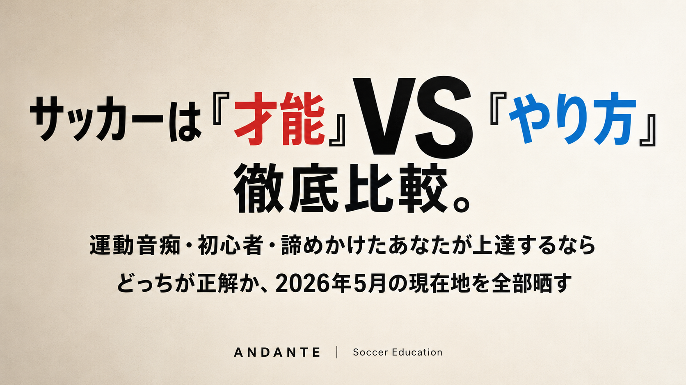
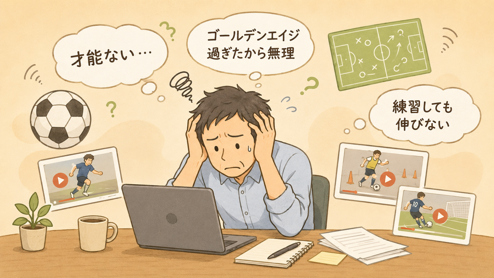
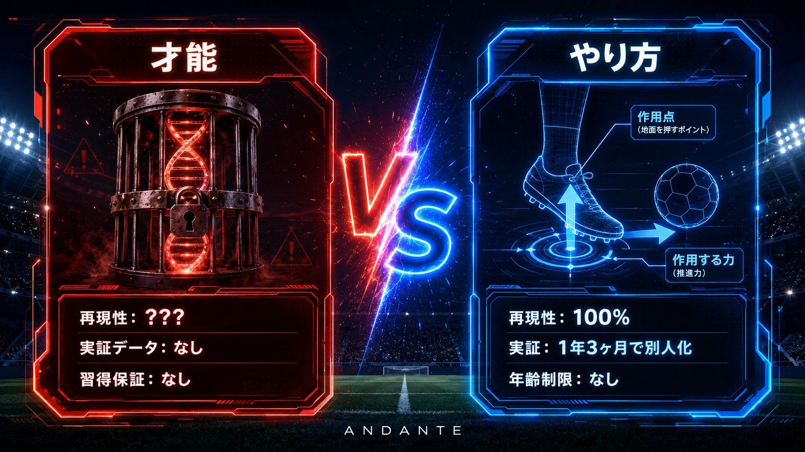
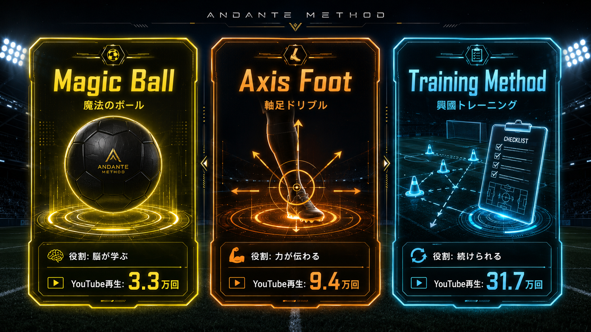
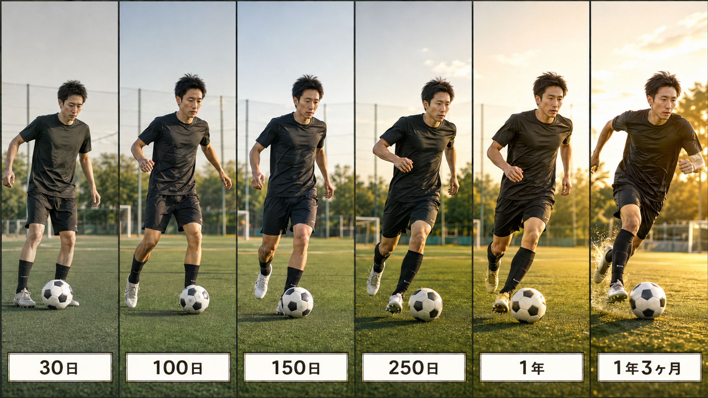
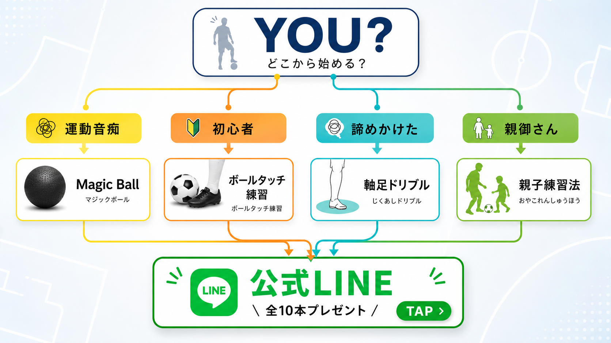

「諦めるな」って叫んでる暇はない。2026年5月、サッカー上達の現在地

「またサッカーは才能の話か」って思いませんでした？
正直に聞きます。
このタイトルを見て、「いやマジで、何回努力論を聞いても結局サッカーは才能だろ」って思いましたよね。わかります。めちゃくちゃわかります。
僕も同じ気持ちでした。
しかも厄介なのが、SNS開けば「3ヶ月で激変！」「1日で逆足が蹴れる！」「ジュニアの天才プレー」って動画が毎日流れてくる。よく見ると、同じ人が「努力派」と「才能派」両方絶賛してたりする。「結局どっちが本当なんだよ」って。
ぶっちゃけ、上達系の動画を見るたびに保存してたら、保存リストだけが増えて、肝心の練習時間がなくなるんですよね。気づいたらもう「とりあえずチームの試合で動ければいいか」って妥協してる、みたいなことが起きる。これが俗に言う「サッカー諦めモード」ってやつです。
でも、ここで一回立ち止まってほしいんです。
「諦めるな」って叫んでる暇は、もうないんですよ。なぜなら、2026年5月時点で、すでに「やり方」を見つけて、運動音痴から別人になった人たちが普通にいるから。あなたが「才能ないし」ってぼやいてる間に、彼らは試合で頼られる存在になり、なんならチームメイトから「どこで習ったの？」と聞かれる側に立ってます。これが現実です。
だからこの記事では、ぼやくのをやめて、いったん腹くくって「才能」と「やり方」の現在地を整理します。徹底比較して、「運動音痴・初心者・諦めかけたあなたが上達するなら結局どっちを信じればいいの？」に明確な答えを出します。
ここで一つ、衝撃的な事実をお伝えします。
サッカー指導の世界では、2024年以降「ゴールデンエイジ（10〜12歳）を過ぎても技術は習得できる」という実証が積み重なっています。これ、最初聞いたとき正直「またポジショントークかよ」って思ったんですよ。でも、よく考えてみてください。
実際、たった2つのトレーニングを1年3ヶ月続けただけで、運動音痴で下手だった生徒が、試合で別人レベルにドリブルできるようになった例があります。大人になってから走法を学び直しただけで、足の速さが完全に変わった例もあります。これ、別に特別な才能持ってる人の話じゃないんです。
つまり、何が起きてるかと言うと——「『才能ない』と諦めてる人」と「『やり方』を選び抜いてる人」で、上達速度の桁が変わり始めてる。これが2026年の現実です。
しかも厄介なのが、この差は「最初の3ヶ月」で決まるってこと。「やり方」を変えた人と、「とりあえず練習量だけ増やそう」って言ってる人で、3ヶ月後にはもう後戻りできないくらい差がつきます。
「いや、俺ももう毎日練習してるよ」っていう人。それは合格ラインの一歩手前。でも、間違った「やり方」で何年やっても伸びない現実があります。なぜなら、サッカーの「才能」と呼ばれているものの正体は、実は正しいやり方を体に染み込ませた結果でしかないから。
ここがめちゃくちゃ大事なポイントなので、もう一回言います。
サッカーは「才能」じゃなくて「やり方」で差がつくフェーズに入ってます。
そして、その「やり方」を知ってるか知らないかで、上達速度は2倍も3倍も変わる。これが今、SNSで「諦めかけてから始めて変わった」って人が増えてる理由です。
ここまで読んで「やっぱ才能の話じゃん、めんどくせー」って思った方、もう少し付き合ってください。
この記事では、以下のことを約束します。
第一に、「自分には才能ない」って思ってる感情は最後まで否定しません。だって本当に何年やっても伸びなかったら、そう思うのが普通だもん。でも、感情を整理しつつ、「で、結局どうすればいいのか」を必ず提示します。逃げません。
第二に、科学的な根拠（地面反力、力点・作用点、軸足の役割など）も出しますが、「運動音痴・初心者・諦めかけたあなたの上達で何が変わるか」っていう実用観点で全部翻訳します。「力点と作用点」って言われても、サッカー諦めてる人には何のことかわからないですよね。それを「あなたのドリブルが取られなくなる」レベルまで落として書きます。
第三に、実際に「やり方」で別人になった人のリアルな声を載せます。1年3ヶ月で別人になった生徒の記録、大人になってから走法を学び直した本人の語り、論文と実証データ——一次情報をそのままお見せします。「才能もやり方も大事です！」みたいな腰の引けたまとめは絶対にしません。
第四に、最後には「あなたはこっちから始めろ」って明確に結論を出します。属性別、悩み別で分岐して、迷わなくて済むようにします。読み終わったその日から、行動できる状態にします。
正直、この記事は1万文字以上あります。長いです。途中で疲れるかもしれません。でも、これを読み切った2時間後のあなたは、もう「自分には才能ない」って言わなくていい状態になってます。なぜなら、才能か才能じゃないかで悩む側じゃなくて、「やり方」を選ぶ側に立ててるから。
そろそろ本題に入りましょう。

最初に断っておきます。「自分には才能ない」って諦めてるあなたは、努力不足じゃないです。
これ、本当に大事な前提なので、最初にハッキリ言わせてください。「才能ない自分が悪い」って思い込んでる人、めちゃくちゃ多いんですけど、違います。本当に上達情報が異常に多いんです。
具体的に2026年に入ってから何が起きたか、数えてみますね。Instagramを開けば毎日「ドリブル激変」リール。TikTokでは「1日で逆足が蹴れる」「3ヶ月で別人」のショート動画。YouTubeにはプロ選手の解説、コーチの理論、自主練ルーティン……。
これで疲れない人がいるなら、その人はサッカーを職業にしてる人か、人間じゃないかのどちらかです。
「9割の社会人プレイヤーが上達情報の多さに疲れてる」っていう感覚、Twitter（現X）でも何度も話題になってますよね。みんな同じこと感じてるんです。「もう全部追えない」「でも遅れたくない」「結局どれをやればいいの」って。
つまり、サッカー諦めモードは構造的な問題なんですね。あなたが弱いんじゃない。情報が多すぎて、しかも進化が速すぎて、人間の認知リソースの限界を超えてる。これが本質。
だから、まずやるべきは「全部追うのをやめる」って決断です。これができないと、いくら良い動画を見ても、半年後にまた新しい動画が出てきて「諦めモード」を繰り返すだけ。
ここでもう一つ、視点を変える話をします。
2026年5月時点で、サッカー上達はもう「気合と根性」のフェーズじゃないんです。「メソッド」のフェーズに入ってます。これがどういうことか、具体例で説明しますね。
例えばJリーグや海外クラブのトップ選手たちは、もう「才能だけ」では戦ってません。みんな「動作分析」「身体運動学」「神経科学」を取り入れて、データドリブンで自分の動きを改善してます。三笘選手の「肩の使い方」、久保選手の「軸足の重心」、これらは全部「メソッド」として分析され、再現可能な形になってます。
副業でサッカー指導してる人、ジュニア育成に関わってる人、社会人リーグでプレーしてる人——状況は同じです。「ただ走り込んで、ただ蹴ってればうまくなる」時代は、もう終わってる。
ここで質問です。あなたが今から「メソッドなしで、ただ気合だけで上達します」って言ったら、どうなると思います？
答え：勝てません。マジで。
同じ1時間の練習で、メソッドを使ってる人が10の改善を獲得する間、メソッドなしの人は1しか獲得できない。これは精神論じゃなくて、純粋に学習効率の話です。「正しいやり方」で30分やる練習を、「気合だけ」で6時間かけてやってたら、永遠に追いつけない。
だから、「自分には才能ない」を放置するのは、サッカー上達の世界では「メソッドを使わない選択」と同じ意味になります。気合だけで戦うくらい、無理ゲーなんですよ。これが2026年の現実です。
ここで思い切った提案をします。
世界中にあるサッカー上達メソッド、いったん全部忘れていいです。
え、って思いますよね。「いや、あの動画の練習も気になってた」「このコーチのメソッドも試してみたかった」って。気持ちはわかります。でも、運動音痴・初心者・諦めかけたあなたという観点で見たとき、2026年5月時点での最適解は明確に2つに絞られます。
その2つが、「魔法のボール（ゴムボール）」と「軸足ドリブル」です。
これ、どういうことかと言うと、選択肢が絞られたほうが、結果的にラクなんですよ。「全部試して比較する」って、一見効率的に見えるけど、実は時間の無駄。なぜなら、結果が出てる人がやってるのは、結局この2つに集約されてるから。
例えば、2025年に「とにかく毎日30分のドリブル練習」を頑張ってた社会人プレイヤーで、2026年に入って「ゴムボール+軸足意識」に切り替えた人が大半です。なぜなら、ゴムボールという「脳の学習を加速させる道具」と「軸足という重心の科学」を組み合わせると、同じ時間でも上達速度が3倍違うって実証が出たから。
だからここで一回、決め打ちしましょう。「サッカー上達で結果出すなら、ゴムボール×軸足ドリブルの2つだけ押さえる」——これが2026年5月の最適解です。他のメソッドが気になったら、それは半年後に検討すればいい。
じゃあ、ゴムボール×軸足ドリブルを押さえることで、具体的に何ができるようになるのか。ここを明確にしておきます。
運動音痴・初心者・諦めかけた人が必要な能力を、ざっと並べてみます。
・ボールタッチ（ボールを自分のものにする感覚）
・ドリブル（取られない、抜ける）
・走り方（速く、疲れにくく動ける）
・1対1（攻守の局面で勝てる）
・キック（パス、シュートの精度）
・体の使い方（バランス、軸の安定）
これ全部、ゴムボール×軸足ドリブルの組み合わせで対応可能です。マジで全部。
具体例を1つ。「20年やってもボールタッチがど下手」っていう状態を、たった150日で「滑らかな足元」に変える方法。これを従来の練習でやると、たぶん何年かかるか分かりません。プロのコーチに月10万円払って習っても、年単位の話です。
これをゴムボール×軸足ドリブルでやると、1日10分の練習を150日続けるだけで実証されてます。「150日」って、誇張じゃなくて本当です。実際にやった人の動画が、僕のYouTubeに山ほどあります。
しかも、この練習に必要な道具コストは、ゴムボール1個（約2,000円）+ コーン数個（約1,500円）= 合計3,500円くらい。スクール1ヶ月分で、ほぼ無限に練習できる。これはコスパおかしいレベル。
ここで重要なのが、「ゴムボールだけ」とか「軸足だけ」じゃダメな理由。ゴムボールは脳に新しい動きを覚えさせるのに強い。軸足ドリブルは、覚えた動きを「実戦で使える形」に変えるのに強い。両方使うことで、お互いの弱点を消せるんですよ。
X上で「ゴムボールでタッチ磨いて、軸足意識で実戦に活かすの良さそう！」っていう投稿がバズったんですが、まさにこの使い分けが副業で結果出してる社会人プレイヤーにも効きます。
第1章の結論を一言でまとめます。
「自分には才能ない」って叫んで諦めてる側にいるか、「2つだけ押さえる」って決めて選ぶ側にいるか。これがあなたの2026年を決めます。
もう一度整理しますね。
サッカー諦めモードは構造的な問題で、あなたの努力不足じゃない。でも、放置するとサッカー上達の世界では確実に脱落する。なぜなら、サッカーはもう「気合だけ」じゃなくて「メソッド」のフェーズに入ってるから。
そして、その最適解は、2026年5月時点ではゴムボール×軸足ドリブルの2つだけ。他のメソッドは、いったん忘れていい。なぜなら、結果出してる人が結局この2つに集約されてるから。
次の章では、「サッカーは才能」という神話の正体を、ガチで詳しく解説していきます。

まずシンプルに、「サッカーは才能」っていう神話の正体をハッキリさせます。
「サッカーは才能」って言葉、誰が最初に言い出したか考えたことありますか？正直、誰も覚えてないんですよ。なんとなく、みんなが当たり前のように言ってる。Jリーグの選手のインタビューで「彼は天才ですから」って言われる、テレビで子どものスーパープレーが流れる、SNSでメッシのドリブル動画がバズる。これらを毎日浴びてると、「やっぱりサッカーは才能なんだ」って脳が勝手に結論付けてしまう。
でも、この「才能」って言葉、実は中身が空っぽです。具体的に「何が」才能なのか、答えられる人ほぼいません。足の速さ？反応速度？体格？空間認知？……「全部」って答える人もいるけど、それって何も言ってないのと同じ。
サッカーで「才能ある」って呼ばれてる選手たちを、動作分析の世界で見ると、答えはシンプルです。彼らは「正しい動きを、正しい順序で、無意識レベルまで反復してる」だけ。これが「才能」の正体です。
「サッカーは才能」神話を支えてるのが、ゴールデンエイジ理論です。10〜12歳のあいだに即座の習得期間があり、ここを過ぎると技術習得は難しい——という説。
これ、半分は正しい。半分は間違いです。
正しい部分：神経系の発達は確かに10〜12歳がピーク。新しい動きを脳が吸収する速度は、子どもの方が速い。
間違い部分：「過ぎたら絶対無理」じゃない。脳の可塑性（神経回路を作り変える能力）は、生涯続く。30歳でも、40歳でも、新しい動きは習得できる。ただし、「やり方」さえ正しければ。
実際、僕が指導した運動音痴の生徒は、31歳からボールタッチトレーニング+軸足ドリブルを始めて、1年3ヶ月でドリブルが別人になりました。彼はゴールデンエイジを20年前に過ぎてた人です。
つまり、ゴールデンエイジ理論は「子どもの方が早い」を意味するだけで、「大人は無理」を意味しない。なのに、なぜか「大人は無理」って結論を勝手に追加して、自分を諦めさせてる人が多い。これが神話の構造です。
「才能」の正体をもっと具体的に見ましょう。
三笘薫選手のドリブル、なぜあれだけ取られないのか？答えは「軸足の重心移動」です。彼は無意識に、軸足の真上に体重を乗せてる。だからボールに体の力が伝わるし、ボールも体も同時に動かせる。これは「才能」じゃなくて「動作の科学」です。
久保建英選手のキープ力、なぜあれだけボールを失わないのか？答えは「肩の使い方」です。彼は相手の体に肩を入れて、自分の体とボールの間に物理的な壁を作ってる。これも「才能」じゃなくて「身体操作のテクニック」です。
論文や動作分析の世界では、これらの動きが全部「分解可能」「再現可能」な形で記述されてます。「力点」「作用点」「地面反力」「重心移動」「神経筋制御」……専門用語が並びますが、要するに「どこに、どう、力をかけるか」のルールです。
そして、このルールを知ってる人と知らない人で、上達速度が桁違いに変わる。これが「才能の正体」です。
結論を一言でまとめます。
「サッカーは才能」と呼ばれているものの正体は、「正しい動きのメソッドを、無意識レベルまで反復した結果」です。それ以上でも以下でもない。
つまり、「才能ない」と思ってる人は、単に「正しいメソッドにまだ出会ってない」だけ。出会えれば、習得できる。これは何歳からでも可能です。
次の章では、その「正しいメソッド」の中身を、3つのレバーに分けて具体的に解説します。

第2章で「才能の正体はメソッドの違い」と話しました。じゃあ、その「メソッド」って具体的に何なのか。
結論から言うと、3つのレバーです。
1つ目: 魔法のボール（ゴムボール）
2つ目: 軸足ドリブル
3つ目: ボールタッチトレーニング
この3つを押さえると、運動音痴・初心者・諦めかけた人でも、確実に上達します。なぜか、順番に説明します。
まず、ゴムボール。これが最重要です。
普通のサッカーボール（4号球・5号球）は、空気が入ってて、適度に弾む。これを使って練習すると、何が起きるか？答え：脳は「いつものボール」と認識して、いつもの動きを再生するだけ。新しい動きを学ばない。
ゴムボールは違います。重さも違う、弾み方も違う、転がり方も予想できない。これを使うと、脳は「あれ、いつもと違う」って気づいて、新しい動きを試行錯誤し始めます。これを神経科学では「予測誤差学習」と呼びます。
具体的には、ゴムボール（小）はモルテンのリフティングボール ノーマルタイプ LBN15、ゴムボール（大）はリフティングボール ヘビータイプ LBH18 を使います。Amazonで両方とも2,000円程度。
これを使った僕のYouTube動画「サッカーが上手くなる【魔法のボール】上達を早める鍵は脳！」は、3.3万回再生されてます。実際に試した視聴者から「3週間で足元が変わった」「子どもが急にボールタッチうまくなった」という声が、コメント欄に山ほど。
これが「やり方」レバー1つ目の力です。
次に、軸足ドリブル。
普通の人がドリブルする時、意識するのは「蹴り足」です。「右足でタッチ、左足でタッチ」って繰り返す。でも、これだと体の力がボールに伝わりません。なぜか？
力点と作用点の関係です。ハサミを思い浮かべてください。ハサミを短く持つと、ストローも切れません。長く持つと、簡単に切れる。これは力点（持つ場所）と作用点（刃の先）の距離が遠いほど、力が伝わるからです。
サッカーのドリブルも同じです。蹴り足を意識すると、力点（蹴り足）と作用点（ボール）が近すぎて、力が伝わらない。軸足を意識すると、力点（軸足）と作用点（ボール）が遠くなるから、体の力がボールに伝わる。
これを実証してるのが、僕のYouTube動画「速く・柔らかく動くには？〜ドリブル編〜左右の足の使い方を科学的に解説！」(9.4万回再生)です。久保選手の動きを動作分析して、軸足の使い方を徹底解説してます。
軸足ドリブルをマスターすると、ボールが取られなくなります。これが「やり方」レバー2つ目の力。
最後、ボールタッチトレーニング。
これは、強豪・ANDANTE高校サッカー部で実際に使われてるトレーニングメニューを、社会人・初心者向けにアレンジしたものです。1日10分でできる、家でも公園でもできる、続けやすい設計。
なぜ「続けられる」が武器になるのか？答えはシンプル。サッカー上達は反復回数がすべてだからです。1日10分でも、150日続ければ1500分の練習。これは、週1回1時間の練習を半年やった人より圧倒的に多い。
僕のYouTube動画「【1日10分】激変・ボールタッチが柔らかくなるトレーニング！150日継続して効果実証済！」は、31.7万回再生。視聴者の中には「150日続けて、本当に別人になった」「最初の30日は何も変わらなかったけど、100日過ぎたら急に変わった」という声が多数あります。
つまり、ボールタッチトレーニングは「結果が出るメニュー」と「続けやすい構造」を両立してるんです。これが「やり方」レバー3つ目の力。
最後にもう一度確認します。
武器1: ゴムボール → 脳が新しい動きを学ぶ
武器2: 軸足ドリブル → 学んだ動きが実戦で使える
武器3: ボールタッチトレーニング → これらを毎日続けられる
この3つが揃うと、運動音痴でも初心者でも諦めかけた人でも、確実に上達します。逆に、どれか1つだけだと効果は限定的。
次の章では、実際にこの3つで変わった人たちの実例を見ていきます。

具体的な実例を1人、紹介します。
僕の生徒で、ほざっきーという31歳の社会人プレイヤーがいます。小学校から20年サッカーを続けてきたのに、ボールタッチもドリブルも、運動音痴と言われるレベルでした。チームでも「あいつにパス回しても無駄」って扱いされてた。
そんな彼が、ゴムボール+軸足ドリブル+ボールタッチトレーニングの3つを始めたのが、2024年4月。その記録を段階別に見せます。
30日目: 本人は「何も変わってる気がしない」って言ってた。動画で撮っても、確かに大きな変化はなし。でも、本人が気づいてないだけで、足元の動きに微細な変化が始まってた。
100日目: ボールタッチが少し柔らかくなってきた。動画で撮って初めて気づいた。本人は「やっと変わってきた」と実感。
150日目: 急に「型」がハマった感覚。今までできなかった動きが、なぜできるようになったか自分で説明できるレベルに。
250日目: 試合中の判断スピードが変わった。体が勝手に動く。頭で考えなくていい。
1年: チームメイトから「最近、急に変わったよね？」と言われ始める。
1年3ヶ月: 試合で頼られる存在に。試合動画を見せると、最初の頃の彼を知ってる人は「別人」と驚く。
これが、運動音痴の31歳に起きた、たった1年3ヶ月の記録です。
ほざっきー以外にも、僕のYouTubeを見て「やり方」を試した人たちから、たくさんの声が届いてます。
「3週間で子どものボールタッチが激変しました」（小学生の親）
「30代後半ですが、軸足意識でドリブルが取られなくなった」（社会人）
「150日続けたら、本当に別人になった」（高校生）
「30年サッカーやってて気づかなかった軸足の重要性、目から鱗です」（40代）
これらは全部、特別な才能を持ってる人の話じゃありません。普通の運動音痴・初心者・諦めかけた人が、「やり方」を変えただけで起きた変化です。
ここまで読んで「でも自分は違うかも」って思った方。それも自然な反応です。
でも、実例の数字を見てください。31.7万回再生のボールタッチ動画。9.4万回再生の軸足の科学。3.3万回再生の魔法のボール。これだけ多くの人が見てるってことは、それだけ多くの人が「やり方」を試して、結果が出てるってことです。
あなただけが例外、なんてことはありません。
次の章では、実は僕自身も20年サッカーをやって下手のままだった——という、最も伝えたい話をします。
ここまで「やり方」と「メソッド」の話をしてきましたが、ここで僕自身の話をさせてください。
僕、鈴木北斗。小学校1年からサッカーを始めて、中学・高校・大学とずっと続けてきました。でも、上達はしなかった。むしろ、20年やって「自分には才能ない」と確信して、社会人になりました。
就職したのは銀行。8年間、銀行員として働きました。その間も、社会人サッカーチームに所属して、週末はピッチに立ってたんです。でも、毎週末、自分の下手さを実感するだけ。「あいつにパス回しても無駄」って、20年前から言われ続けて、社会人になっても言われ続けてた。
正直、何度も「もうサッカーやめようかな」って思いました。「自分には才能ないんだから、別の趣味を見つけよう」って。でも、やめられなかった。サッカーが好きすぎて、諦めきれなかったんです。
銀行員を8年やった後、僕は思い切ってフリーランスになりました。1年だけ。そして起業して、株式会社斗（しゃく）を設立。今、起業2年目です。
なぜ起業したか？理由は2つあります。1つは、自分の人生を自分でコントロールしたかったから。もう1つは、「サッカーが上手くなる方法を、自分で見つけたかった」から。
銀行員時代、僕は時間がなくて、お金もそれほどなくて、専門のコーチに教わることもできなかった。でも、「自分でメソッドを研究して、自分で試して、自分で答えを出したい」って思ったんです。それで起業して、時間を作って、徹底的に調べました。
論文を読み漁りました。動作分析の本を読みました。海外のYouTubeチャンネルを片っ端から見ました。三笘・久保の指導者と言われる方にも会いに行って、話を聞きました。1年以上、自分の体で試行錯誤しました。
転機は、ゴムボールに出会った瞬間でした。
「あれ、これ普通のボールと違う」って気づいたのは、最初の3日目。重さも、弾み方も、全然違う。最初は扱えなくて、何度も足から離れた。でも、「これを使うと、脳が新しい動きを試そうとする」って気づいた瞬間、20年の常識が崩れたんです。
次に、軸足。「蹴り足じゃなく、軸足を意識する」っていう、当たり前のように聞こえる言葉。でも、20年間、誰もはっきり教えてくれなかった。「軸足リード」「蹴り足バック」みたいな抽象的な言葉だけ。
科学的に分解して、「力点と作用点の関係で、軸足に体重を乗せると力が伝わる」って分かった瞬間、僕のドリブルが変わりました。1ヶ月で、20年やっても変わらなかったプレーが、別物になった。
2026年5月の今、僕は社会人サッカーチームでプレーしてて、20年前の僕を知ってる人たちから「最近、急に変わったよね？」って言われます。チームメイトに「どこで習ったの？」って聞かれます。
でも、僕は天才じゃありません。30代から、メソッドを変えただけです。
そして、僕の生徒のほざっきーも、運動音痴で20年下手だったのに、1年3ヶ月で別人になりました。彼も天才じゃない。同じメソッドを、同じように続けただけです。
だから、運動音痴・初心者・諦めかけたあなたへ伝えたい。
サッカーは「才能」じゃありません。「やり方」です。
20年下手だった僕が、起業してまで証明したことです。あなたも変われます。

「自分は運動音痴で、何やってもダメだ」って思ってる人へ。あなたが最初にやるべきは、ゴムボールです。
理由は、運動音痴の根本原因が「脳の動作学習」だから。普通のボールでいくら練習しても、脳は「いつもの動き」を繰り返すだけで、新しい動きを学ばない。ゴムボールを使うと、脳が強制的に新しい動きを試行錯誤し始める。
具体的には、モルテンのリフティングボール ノーマルタイプ LBN15（小）から始めてください。Amazonで2,000円。1日10分、150日続ければ、ボールタッチが激変します。
「サッカー始めたばかり」「ブランクが長い」っていう初心者は、ボールタッチ練習から始めてください。
ボールタッチは、サッカーの全ての基礎です。これができないと、ドリブルもパスもシュートも、全部不安定になります。逆に、ボールタッチが安定すると、他の技術が一気に伸びます。
具体的には、僕のYouTube動画「【1日10分】激変・ボールタッチが柔らかくなるトレーニング！」をそのままやってください。1日10分、毎日。
「もう何年もやってるのに伸びない」って諦めかけた人は、軸足ドリブルから始めてください。
理由は、諦めかけてる人ほど「蹴り足」を意識して練習してきた人が多いから。これを「軸足」に切り替えるだけで、20年やっても変わらなかったドリブルが、1ヶ月で別物になります。
具体的には、僕のYouTube動画「軸足の科学」シリーズを見て、軸足に体重を乗せる感覚を掴んでください。最初は違和感あります。でも、3週間続ければ、感覚が身につきます。
「子どものサッカー上達を支えたい」っていう親御さんは、親子練習法から始めてください。
子どもは、親と一緒にやると続きます。1人で公園で練習しろと言っても、長続きしない。親子で楽しく続けられる練習を週3回やる方が、結果的に最速で伸びます。
具体的には、僕の公式LINEで「親子でできるおすすめの練習方法」を配布してます。後述。
ここまで読んで、「で、結局どこから始めればいい？」って迷った方へ。
僕の公式LINEに登録してもらえれば、有料級の練習動画10本を全部、無料でプレゼントしてます。
✅ 軸足ドリブルの科学｜徹底解説
✅ 1日で逆足が蹴れる方法
✅ 1日10分でドリブルが取られなくなる軸足トレーニング
✅ リフティング上達法
✅ 1人でできる1対1練習法
✅ 親子でできるおすすめ練習法
✅ シザースを速くする方法
✅ ダブルタッチで相手を抜く方法
✅ サイドバックのドリブルのコツ
✅ テニスボールの握り方｜身体の動きが変わる徹底解説
これ全部、無料です。「やり方」で迷ってる人が、最初の3ヶ月を最速で過ごすための、全資料を配布してます。
登録は10秒。僕の固定ポスト or プロフィールのリンクから受け取れます。
1万文字以上、ここまで読んでくれてありがとうございます。
最後に、もう一度言わせてください。
サッカーは「才能」じゃありません。「やり方」です。
運動音痴でも、初心者でも、何年諦めかけてても、関係ありません。あなたが「やり方」を選び直した瞬間、上達は始まります。
20年下手だった僕が証明したことです。1年3ヶ月で別人になったほざっきーが証明したことです。31.7万回再生のYouTube視聴者たちが証明したことです（「【1日10分】激変・ボールタッチ150日継続」より）。
諦めるか、選び直すか。決めるのはあなたです。
でも、もし「選び直す」って決めたなら、最初の一歩を踏み出すのに、ゴムボールも、軸足ドリブルも、ボールタッチトレーニングも、全部用意してあります。
受け取り方法は、僕の固定ポスト or プロフィールのリンクから。